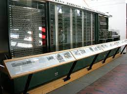
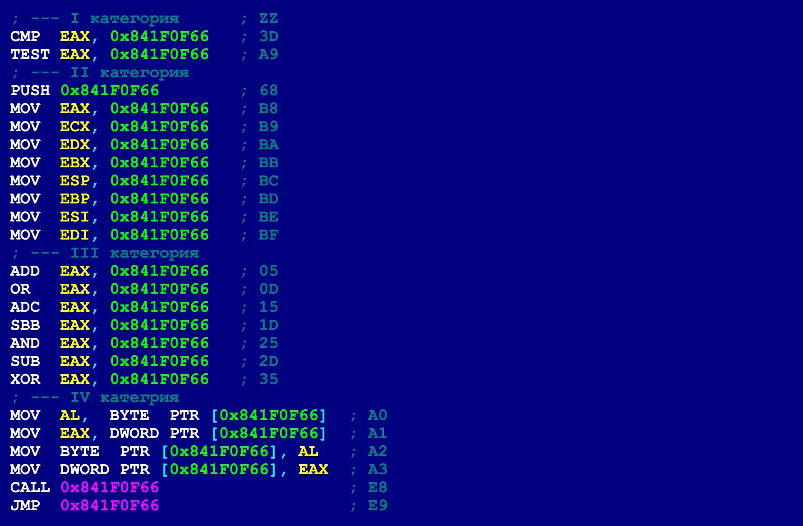
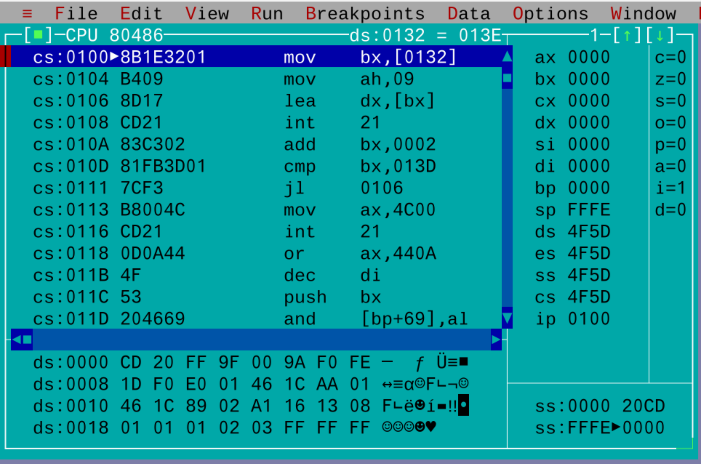
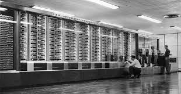

Язы́к ассе́мблера (англ. assembly language) — представление команд процессора в виде, доступном для чтения человеком. Язык ассемблера считается языком программирования низкого уровня, в противовес высокоуровневым языкам, не привязанным к конкретной реализации вычислительной системы.
Программы, написанные на языке ассемблера однозначным образом переводятся в инструкции конкретного процессора и в большинстве случаев не могут быть перенесены без значительных изменений для запуска на машине с другой системой команд.
Ассемблером называется программа, преобразующая код на языке ассемблера в машинный код; программа, выполняющая обратную задачу, называется дизассемблером.
Первые ассемблеры были спроектированы Кэтлин Бут в 1947 под ARC2[2] и Дэвидом Уилером[en] в 1948 под EDSAC[3], при этом термин «ассемблер» не использовали, просто называя язык «множеством базовых команд» (англ. basic order set) и «начальными командами» (англ. initial orders) соответственно. Впервые термин «ассемблер» для процесса объединения полей в командное слово начали использовать более поздние отчёты по EDSAC.
Также на ранних этапах развития программирования было введено понятие автокод — язык программирования, предложения которого по своей структуре в основном подобны командам и обрабатываемым данным конкретного машинного языка[4][значимость факта?]. В настоящее время термин фактически не используется.
Исторически, если первым поколением языков программирования считать машинные коды, то язык ассемблера можно рассматривать как второе поколение языков программирования[источник не указан 458 дней]. Недостатки языка ассемблера, например, сложность разработки на нём больших программных комплексов, позже привели к появлению языков третьего поколения — языков программирования высокого уровня (таких как Фортран, Лисп, Кобол, Паскаль, Си и другие).
Не существует общеупотребительного синтаксиса языка ассемблера. Так как системы команд различных процессоров значительно отличаются, также и отличаются языки ассемблера для этих процессоров. Кроме того, каждая программа-ассемблер может использовать отличающийся от других синтаксис. В ассемблерах для процессоров x86 наибольшее распространение получил так называемый Intel-синтаксис, в меньшей степени — синтаксис AT&T.
Базовой конструкцией языка ассемблера является мнемоника, или мнемокод — краткое символьное представление команды процессора. Как правило, она состоит из нескольких символов, обозначающих производимое действие (например, mov — для пересылки из одного регистра в другой, add — для сложения значений и т.д.). Также в мнемонику может входить объект, над которым производится операция (регистр, память, стек), либо другие особенности (влияние на регистр флагов, условия исполнения и т.д.), однако в других диалектах те же особенности могут задаваться в операндах.
Как правило, ассемблер каждого процессора имеет свой традиционный набор мнемоник, но встречаются ассемблеры с кроссплатформенным синтаксисом (такие, как синтаксис AT&T), однако кроссплатформенными в них остаются только обозначения, код одного процессора не может быть напрямую перенесён на другой.
В качестве операндов могут указываться регистры, константные значения, адреса ячеек памяти и портов ввода-вывода, константы, метки и т.д. Разные ассемблеры могут требовать разного порядка операндов: в одних реализациях первым идёт оператор, в который записывается значение, в других он идёт последним. Как правило, операнды отделяются от мнемоник команд пробелами.
Наиболее распространённым типом данных, с которыми умеют работать большинство процессоров, является целое число, упакованное в машинное слово, либо один или несколько байтов, реже число с плавающей запятой. В программах на языке ассемблера значительно чаще используются значения, заданные в разных системах счисления. Прежде всего в компьютерах с восьмибитным байтом часто используется шестнадцатеричная запись числа, так как в один байт помещаются две шестнадцатеричные цифры. Некоторые значения могут записываться двоичными кодами. В ранних компьютерах с шестибитным байтом встречалась также восьмеричная система счисления.
Кроме того, иногда требуется задавать блоки данных, загружаемые вместе с программным кодом, для чего ассемблер может содержать специализированные директивы. Современные ассемблеры могут поддерживать также организацию данных в виде различных структур. Ассемблеры могут поддерживать различные конструкции для облегчения чтения ассемблерного кода, снятия с программиста необходимости следить за адресами инструкций, а также для реализации элементов, характерных для языков высокого уровня.